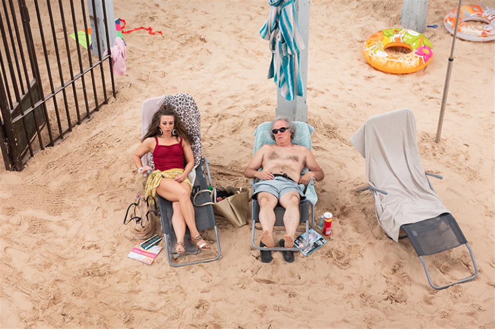
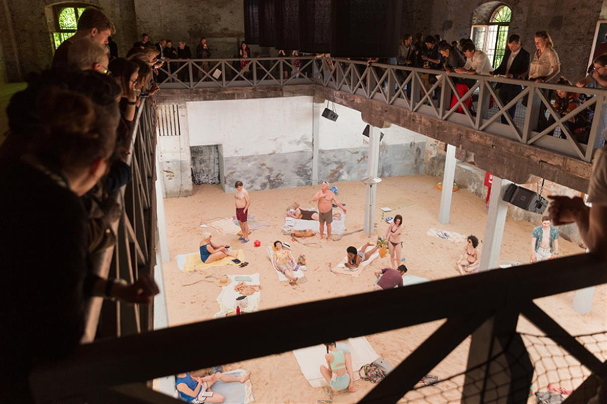
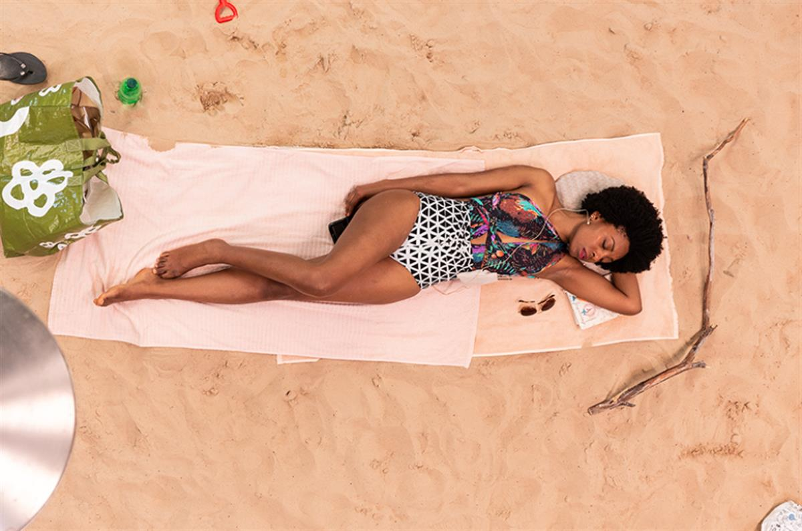
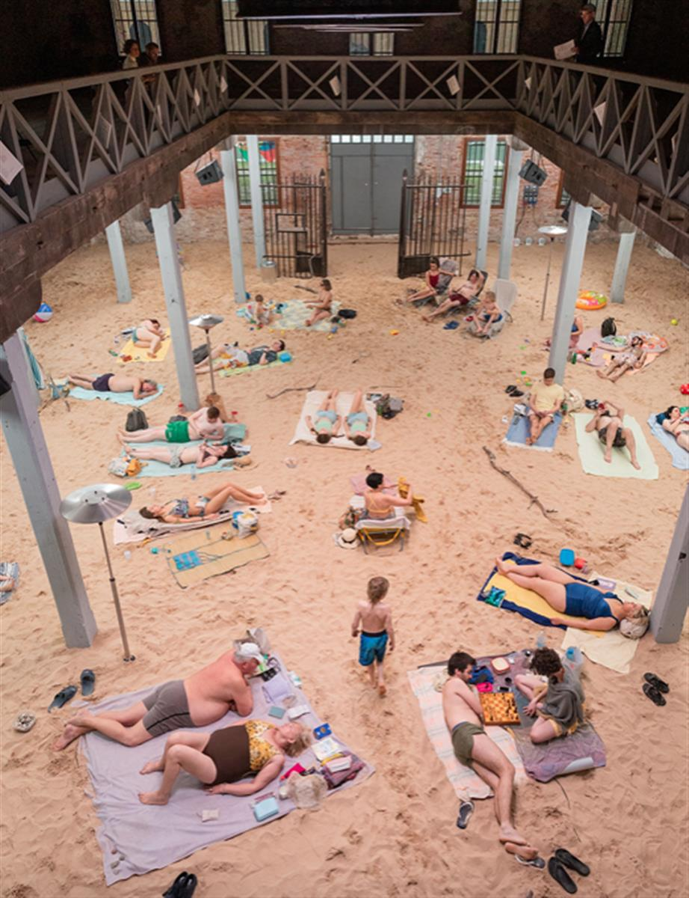

The Golden Lion-winning Lithuanian Pavilion, ‘Sun & Sea (Marina)’, crafts an endless pop song for the end times
We have been warned. As I write, another report heralds catastrophe: this time, a UN global assessment reveals the threat to humanity, as one million species are now at risk of extinction. And yet the experience of climate change stretches so far across time and space; the eco-philosopher Timothy Morton describes it as a ‘hyper-object’, such that human consciousness struggles to fully comprehend it. Its vastness goes some way towards explaining the apathy that accompanies the coming apocalypse. Rather than continue to create stories out of climate change’s cataclysmic local events – disappearing ice and rising oceans, extreme storms and droughts – can we also think of how it is woven into the fabric of our ordinary, everyday lives?
One morning in May, I walked through Venice’s Castello neighbourhood to the Marina Militare, across from the Arsenale, once the island-city’s mighty shipyards and armouries. Stepping into a former naval warehouse, this year home to the Lithuanian Pavilion for the 58th Venice Biennale – the first time this military complex has been opened to the public – I climbed the stairs leading to a half-lit mezzanine. Beneath lay an expanse of sand: a crowded midday beach scene, blazing under artificial lights. Swimwear-clad bodies lounged on towels and deckchairs, taking turns to break into song, accompanied by the slow ostinato hum of an unseen chamber organ.

Rugile Barzdziukaite, Vaiva Grainyte, Lina Lapelyte, Sun & Sea (Marina), 2019, opera-performance view, Biennale Arte 2019, Venice. Photograph: © Andrej Vasilenko
The initial effect of Sun & Sea (Marina) (2019) – produced by director Rugilė Barzdžiukaitė, librettist Vaiva Grainytė and composer Lina Lapelytė, and curated by Lucia Pietroiusti – lies somewhere between Big Brother and operetta. But as the composition drifts on, it begins to contend with one of climate change’s key questions: how can we build an ecological consciousness? ‘It’s not an activist work,’ Pietroiusti tells me. ‘It’s a political work that asks something fundamental about the possibility of conceiving something so vast.’
This quiet lament for an age of planetary crisis is dreamy, hazy, even lazy. The modal melodies of its roaming arias and choruses are followed by the simplest of recorded keyboard lines, set to faint field recordings: the suggestion of ocean waves, the murmur of a propeller. On the sands below, children squabble over inflated beach balls. Old men sun themselves and linger over newspaper crosswords. And then the 20 or so holidaymakers, young and old, take turns to sing as they lie down, looking up at an imagined sky. They sing of passing thoughts, personal tribulations, lovers’ conversations, and prophetic warnings of climate change’s toll on the earth. A ‘Wealthy Mommy’ flicks between her iPhone and a copy of Vogue, before reminiscing about a diving trip to Australia: ‘What a relief that the Great Barrier Reef has a restaurant and hotel!’ she sings. ‘We sat down to sip our piña coladas – included in the price!’. Another woman objects to the beach-goers who have arrived with their dogs. They ‘leave shit on the beach, fleas on the sand!’, she quavers.

Rugile Barzdziukaite, Vaiva Grainyte, Lina Lapelyte, Sun & Sea (Marina), 2019, opera-performance view, Biennale Arte 2019, Venice. Photograph: © Andrej Vasilenko
Their songs of cocktails and sunscreen soon become laced with threat and tragedy: the woman singing her ‘Song of Complaint’ wonders at the lack of snow over Christmas, while a man caught up in a ‘Philosopher’s Commentary’ reflects on the Chinese factories that have produced the swimming suits they wear. A pair of identical twins cry over the disappearance of coral life, the extinction of the fish and bees, and muse over the possibilities of a 3D-printed future. Operatic lightness blooms into a transcendental final chorus, bleeding with fantastical imagery and ecological anxiety: ‘This year the sea is as green as a forest. Eutrophication! Botanical gardens are flourishing in the sea. The water blooms. Our bodies are covered with a slippery green fleece. Our swimsuits are filling up with algae.’
There is something particularly intimate about the space of the beach. It is, Pietroiusti says, ‘one of the only spaces where you do intimate things in public’. This intimacy is intensified through the particular non-human view given to the audience, as we watch the operetta performed below the viewing balcony. Barzdžiukaitė tells me that prior to starting work on Sun & Sea (Marina), she had been capturing footage for her documentary Acid Forest (2018), set within a cormorant colony, in which she adopted a bird’s-eye view. This ambiguous perspective – in which the world below is defamiliarized – was ‘subconsciously inherited’ in the Venice operetta. Our gaze is burning, ruthless, like the sun above; the bodies below barely move, a cipher for a tired world.

Rugile Barzdziukaite, Vaiva Grainyte, Lina Lapelyte, Sun & Sea (Marina), 2019, opera-performance view, Biennale Arte 2019, Venice. Photograph: © Andrej Vasilenko
The work was first staged at Vilnius’s National Gallery of Arts in 2017 in Lithuanian. The score and libretto have since been reworked for its English-language Venice edition, with its solo parts spaced out to allow performers time to rest, allowing the piece to run throughout the entire day. Sun & Sea (Marina) now consists of a roughly one-hour performance set to a perpetual loop. Lingering in the space, you soon learn to stop worrying about following a narrative, and the more the everyday monotony of the seaside scene below seeps through. The music itself becomes a source of lightness – the winding, folk-like melodies swelling through the space, becoming a texture, and revealing the world beneath in even more intimate detail. Lapelytė has previously used traditional polyphonic Lithuanian song forms – sutartinės – in her work, and it’s possible to hear their symmetrical, repeating influence filtering through.
This isn’t the first time that Barzdžiukaitė, Grainytė and Lapelytė – who have all known each other since growing up in the Lithuanian city of Kaunas – have taken up the apparently light, politically-charged form of the operetta to comment on the costly pleasures of overconsumption. Their piece Have a Good Day! (2013), described as an ‘opera for 10 cashiers, supermarket sounds and piano’ – filled with arias and beeping barcode scanners – delved into the emotional labour of female shop workers. Grainytė tells me that she considers Sun & Sea (Marina) and Have a Good Day! ‘somewhat a diptych’, in the ways they speak of a macrocosm through a microcosm, both filled with the ‘personal songs of daily nothingness’.

Rugile Barzdziukaite, Vaiva Grainyte, Lina Lapelyte, Sun & Sea (Marina), 2019, opera-performance view, Biennale Arte 2019, Venice. Photograph: © Andrej Vasilenko
What does the end of the world sound like? It’s a question that musicians and artists have been grappling with for some time. In a 2015 article ‘Geopolitics and the Anthropocene: Five Propositions for Sound’, Anja Kanngieser makes the case for sound’s clarifying potential, to evoke deep time scales beyond conventional comprehension. Consider Katie Paterson’s Langjökull, Snæfellsjökull, Solheimajökull (2007): sound recordings of melting Icelandic glaciers are pressed into records, then cast and frozen using glacier meltwater, and played on a turntable until they melt. More cynically, there is pop star Grimes’s recent promise to make climate change ‘fun’ in her forthcoming album Miss_Anthrop0cene (2019) or Pharrell Williams’s ‘100 Years’, a song stored in a water permeable safe in the cellars of a luxury cognac producer – due to be played in 2117, unless the rising waters get there first. A world away from how in Sun & Sea (Marina), simple dramas refashion our crisis as a source of ecstatic affect.
If that politically ambiguous term, the Anthropocene, marks out a geological era in which humans are the drivers of ecological change – an age marked by extreme vulnerability – what does that mean for our inner lives? Rather than the anthropocentric sublime, the frozen fear and terror of a world on the brink of collapse, Sun & Sea (Marina) brings us closer to the world, and to each other. Lapelytė’s score is pure, lucid song, set in motion through bucolic keyboard harmonies – more lullabies than operatic arias – and then in the distance, the cries of birds circling overhead, the rumbling of airplane engines.
It is easy these days to feel exhausted, hopeless, cynical. In his pitilessly titled The Uninhabitable Earth (2019), David Wallace Wells writes how our current trajectory promises death and suffering ‘at a scale of 25 holocausts’ – and that’s the best-case outcome (the worst is extinction). But Sun & Sea (Marina) reminds us, I think, that fear is not the only animating force: our relationships with one another can be one too. For now, I prefer to take refuge in the words of Donna Haraway: ‘The present is not a vanishing instant; it is a rich temporality of living and dying, inheriting pasts and enabling futures, but not futurist and not fixated on a vanished past. A thick present, a thick now is the potent time at stake.’
The Lithuanian Pavilion is part of the 58th Venice Biennale, Italy. It runs until 31 October.
Main image: Rugile Barzdziukaite, Vaiva Grainyte, Lina Lapelyte, Sun & Sea (Marina), 2019, opera-performance view, Biennale Arte 2019, Venice. Photograph: © Andrej Vasilenko
En Liang Khong is news and comment editor at frieze. His writing on politics and art has been published in Prospect, Financial Times, Times Literary Supplement, Los Angeles Review of Books, The New Statesman, The Daily Telegraph and The New Inquiry. Follow him on Twitter: @en_khong